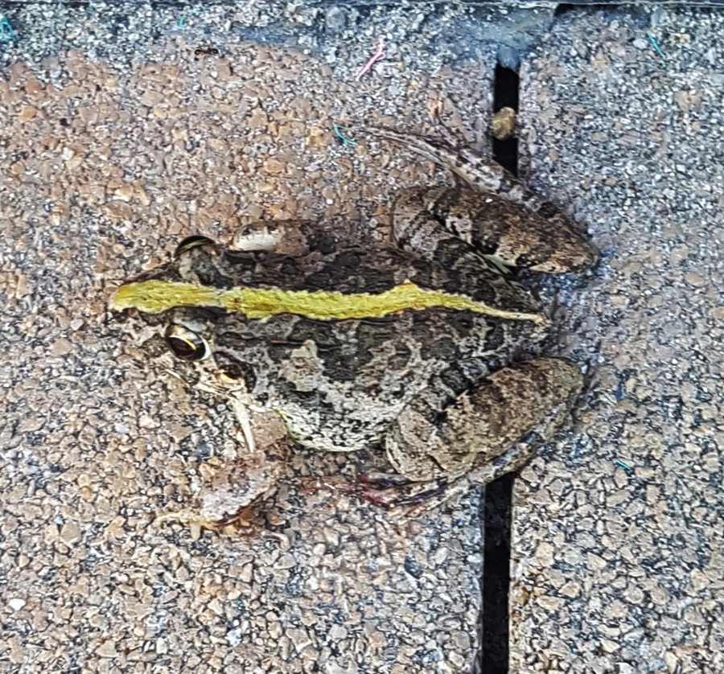

两栖动物 · 动物界
泽蛙 Fejervarya multistriata

中国南方稻田与池塘最常见的蛙类之一，体色变化大，雨季夜晚鸣叫求偶，以昆虫为食，是农田害虫的重要天敌。
- 分类
- 门脊索动物门纲两栖纲目无尾目科叉舌蛙科属泽蛙属
- 栖息环境
- 稻田、池塘、水沟、沼泽等静水或缓流水体及附近草丛
- 地理分布
- 中国南方及东南亚部分地区
- 保护级别
- IUCN 无危（LC）；中国“三有”保护动物
物种志
泽蛙体长约 4–6 厘米，雌蛙略大于雄蛙。头部呈三角形，吻端尖，背部皮肤粗糙，散布长短不一的纵褶，体色变化很大，从灰褐、黄褐到暗绿色都有，背中央常有一条浅色脊线，四肢有横纹，趾间蹼发达，善跳跃也善游泳。
它广泛分布于东亚的稻田、池塘、水沟和湿地，白天多藏在草丛或泥洞中，黄昏后出来捕食蚊虫、飞虱、叶蝉、蚂蚁等小型昆虫。繁殖期集中在春夏雨季，雄蛙在田埂和水草间高声鸣叫，雌蛙每次产卵数百至上千粒，卵成片浮在水面，蝌蚪约一个月完成变态。泽蛙耐污染、适应力强，是南方农田生态系统中数量最多的两栖动物之一。
形态与习性
- 食性蚊虫、飞虱、叶蝉、蚂蚁等小型昆虫
- 体长约 4–6 cm，雌蛙略大
- 繁殖春夏雨季产卵，每次数百至上千粒
- 活动节律黄昏后活动，白天藏在草丛或泥洞中
- 寿命野外约 3–5 年
- 天敌蛇、鸟、黄鳝、水蛇等
趣味知识
- 泽蛙的体色会随环境变化，从灰褐到暗绿都有，背中央常有浅色脊线。
- 一场夏雨过后，稻田里的雄蛙会彻夜鸣叫，声音此起彼伏。
- 蝌蚪约一个月就能完成变态，是稻田里数量最多的两栖动物之一。